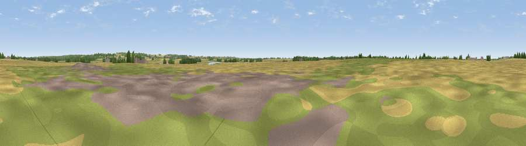

Viewpoint near Scotter
#44466 in England · top 94% of its area beats it · near ScotterThe view, rendered

A 360° render of this exact spot computed from the terrain model, tree cover and land cover — summer colours, afternoon light, calibrated against photographs of famous viewpoints. Real trees, hedges and buildings will differ in detail.
The panorama
Grey silhouette: terrain skyline in each direction (720 bearings, Earth curvature and refraction included). Dashed green: skyline with trees (+15 m) and buildings (+8 m) as obstacles. Blue strip: how far the ground is visible on each bearing.
Where the view opens
Wedge length = distance to the farthest visible ground on that bearing (vegetation-aware). Rings at 10, 25 and 50 km.
What fills the view
69% cropland · 22% grassland · 7% woodland · 1% built-up ·
Angular shares of the visible panorama (visual magnitude), not map area. Landscape diversity 0.38 (0–1 Shannon).
Key numbers
More beautiful places nearby
The staircase of upgrades: each row has a higher view potential than everything closer. Driving times are estimates from straight-line distance, calibrated against real road routing — check an actual route before setting out.
| Place | Direction | Drive | Score |
|---|---|---|---|
| Viewpoint near Scotter | N · 1 km | ~4 min | 27.0 |
| Viewpoint near Messingham | N · 4 km | ~9 min | 30.6 |
| Ash Holt | E · 4 km | ~9 min | 47.3 |
| Viewpoint near Grayingham | SE · 6 km | ~12 min | 50.9 |
| Tower Hill | W · 14 km | ~25 min | 52.3 |
| Viewpoint near Burton upon Stather | N · 17 km | ~30 min | 57.2 |
| Viewpoint near Gringley on the Hill | WSW · 18 km | ~31 min | 59.3 |
| Beacon Hill | WSW · 19 km | ~32 min | 65.7 |
53.49640, -0.64731 · source: osm peak · position refined by local search. Computed location — check access rights before visiting.